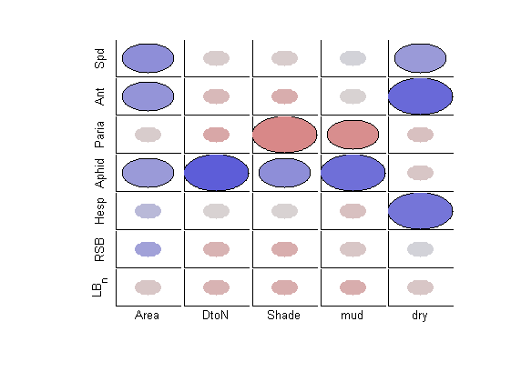
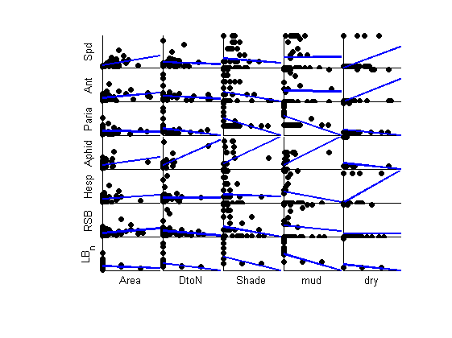
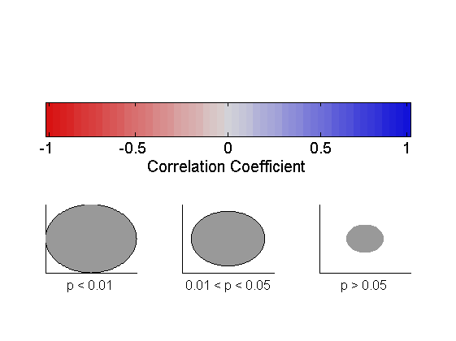
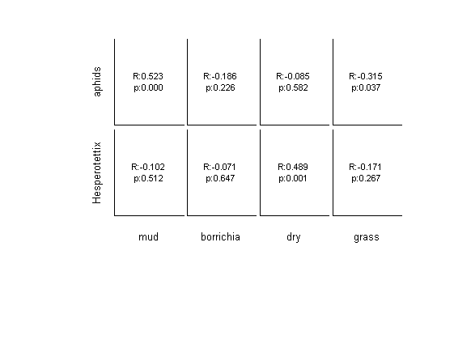
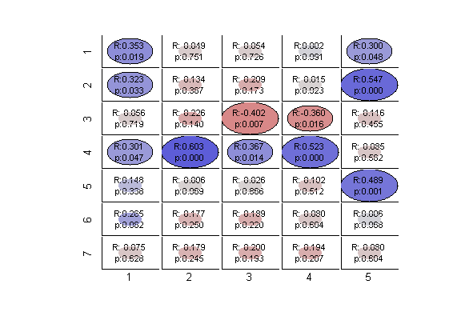
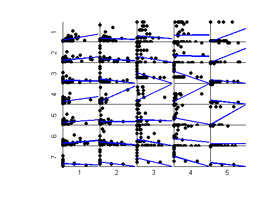
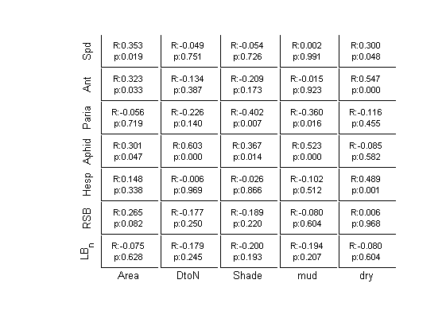

Example of using function [mycorrplot_1]
This is an example file demonstrating how to use * [mycorrplot_2] * to viisualize the result of correlation (i.e. the results from * corr(X,Y) *).
Use my Iva insect data [X_community] as example
by Wei-Ting Lin, 2014/10/23
Contents
Setting up and load data
set path to current folder, dependent files and X_data under the same folder cd 'C:\Users\ASUS\Dropbox\DataCoding\utility_wtl\examples'
clear;clc
load ./X_data/X_community
[X_community] contains two matrices, and two "name" files:
- insect_data : 44 x 13 matrix, data for 44 patches and 13 species
- patch_met : 44 x12 matrix, data for 44 patches and 12 patch attributes
- insect_names : content of the insects (each column in [insect_data])
- met_names : content of the patch attributes I like to keep data as a matrix and put their names in a seperate file. We are only using the [insect_data] here.
Short names
The names in insect_names can be too long for some display, so I create a short version of names
shortnames = {'Spd','Ant','Ophr','Paria','Aphid','Hesp','RSB','Crypt','Keye','LB_7','LB_0','LB_n','LB_sw'}
shortnames_met = {'Site','Patch','L','W','Area','H','DtoN','Shade','mud','borr','dry','grass'};
shortnames =
Columns 1 through 7
'Spd' 'Ant' 'Ophr' 'Paria' 'Aphid' 'Hesp' 'RSB'
Columns 8 through 13
'Crypt' 'Keye' 'LB_7' 'LB_0' 'LB_n' 'LB_sw'
Subsetting : use only some of the original data in later analyses
set1 = [1 2 4 5 6 7 12]; set2 = [5 7 8 9 11 ];
make a table
Tdata = array2table(insect_data(:,set1),'VariableNames',shortnames(set1)); Tdata(1:3,:) % display the first few lines Tdatamet = array2table(patch_met(:,set2),'VariableNames',shortnames_met(set2)); Tdatamet(1:3,:)
ans =
Spd Ant Paria Aphid Hesp RSB LB_n
_______ _______ _____ ______ _______ _______ ____
1.6667 3.3333 0 7.6667 0.16667 0.16667 0
0.83333 0 0 67.5 0 0 0
1.1667 0.33333 0 14 0 0.33333 0
ans =
Area DtoN Shade mud dry
______ ____ _____ ___ ___
1.4539 1.95 0 0.4 0
2.376 4.85 5 1 0
0.3626 1.79 4 0.4 0
Using [mycorrplot_2]
Syntax
mycorrplot_2(X,Y,xnames,ynames,type,plotson)
- X, Y: data; X and Y should have the same number of rows; we are interested in correlation between each column of X and each column of Y. as in corr(X,Y)
- xnames, ynames : name of each column in X and Y, stored in cell array of strings; default is {'1','2','3',....}
- type : style of output, can be 'C' (for circle),'T' (for text),'B'; default is 'B' (for both)
- plotson: a vector of 3 numbers,0 or 1, indicate whether each plot will be made. Default: [1 0 0]
Plotson
- plotson(1): the main plot with R and p values
- plotson(2): the scatterplots with LS line
- plotson(3): the color bar for the circles
Examples of usage: type = 'C'
'C' means put all circles
mycorrplot_2(insect_data(:,set1), patch_met(:,set2), shortnames(set1),shortnames_met(set2), 'C',[1 1 1])
   Examples of usage: type = 'T'
'T' means put text and circles
don't need legend everytime, set colorbaron (the 4th parameter) to 0
mycorrplot_2(insect_data(:,[5,6]), patch_met(:,[9 10 11 12]),insect_names([5 6]),met_names([9 10 11 12]), 'T',[1 0 0])
 Examples of usage: Default; type = 'B'
'B' means put both text and circle
- Default type is 'B'
- Default labels are numbers
mycorrplot_2(insect_data(:,set1), patch_met(:,set2)) 
Examples of usage : inputs are table
[] as place holder
mycorrplot_2(Tdata,Tdatamet,[],[],'T',[1 0 0])
